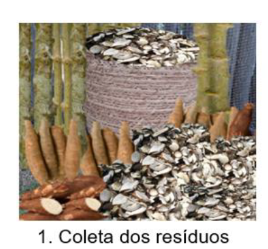
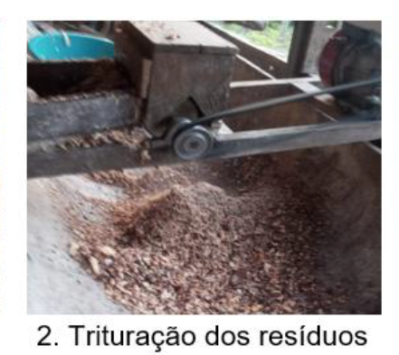
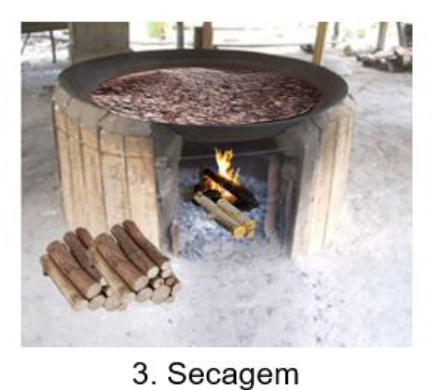
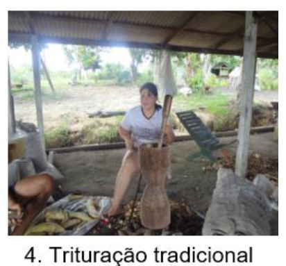
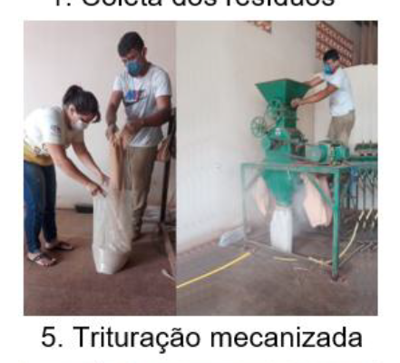
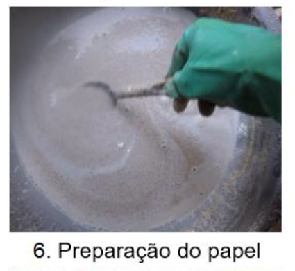
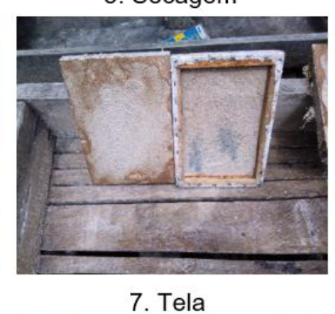

Um resíduo agrícola comum vira papel artesanal, material didático e ponto de partida para pensar economia circular, química e inteligência artificial em sala de aula.
A celulose é a fibra que dá estrutura ao papel. A lignina precisa ser parcialmente removida no cozimento — é o que muda a textura e a resistência da folha final.
O passo a passo real, registrado em cada etapa do processo. Nas etapas 4 e 5, dois métodos alternativos de trituração final foram testados.

Cascas e resíduos de mandioca recolhidos junto aos produtores.

Primeira trituração, quebrando a casca em pedaços menores.

Resíduos secos em tacho sobre fogo de lenha.

Casca seca socada em pilão de madeira até virar pó.

Alternativa ao pilão: moinho mecânico para triturar em maior volume.

Pó da casca misturado com água (e cola branca), formando a massa/polpa.

Massa espalhada na tela, onde a folha toma forma e seca.
3 kg de casca triturada em pó produziram 1 folha de 2mm em 3 semanas.
Base usada na calculadora abaixo.
Base real: 3kg → 1 folha de 2mm em 3 semanas. "Em paralelo" assume espaço para secar tudo ao mesmo tempo; "em lotes sequenciais" soma o tempo de cada lote de 3kg, um atrás do outro.
Pouches e caixas simples para produtos locais.
Identificação de produtos com furo para barbante.
Sementes na polpa — o papel vira muda ao ser plantado.
Bandeirinhas e enfeites para feiras de ciência.
O papel de 2mm é grosso demais para impressoras comuns — clique em cada ideia para ver o passo a passo manual.